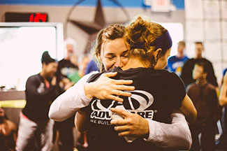

CrossFit TX Forging Elite Community
We are a CrossFit community that is 100% dedicated to the success of our members. If you are looking to be a better you; whether you are a soccer mom, a weekend warrior, a highschool athlete, or a world champion athlete this is the place for you. We can help you acheive your fitness goals.
Our program delivers a fitness that is, by design, broad, general, and inclusive. Our speciality is not specializing.
Not only are we a CrossFit box we are a community. For many of our members this community has become a family. We are here to support each other in all aspects of life.
"CrossFit TX is a true community. You feel it as soon as you walk in the door. Coaches are well informed, and teach form/technique above all else. Last but not least- It is a GREAT place to have FUN!" - Lisa Gard
What is CrossFit?
- Constantly varied functional movements performed at relatively high intensity.
- Strength and Conditioning program
- Scalable-making it perfect for all fitness levels.
- A program that will best prepare trainees for any physical contingency-not only for the unknown, but for the unknowable.
- A community that has arisin from people doing workouts together.